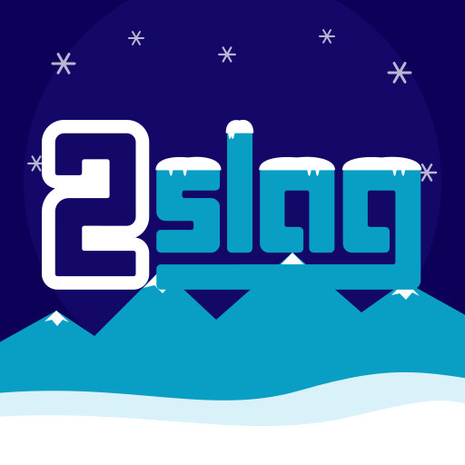

Kort: de app heeft al een eigen stijl, alleen staat die er negen keer los in. Papier, donkerblauwe lucht met het echte panorama vanaf Le Jandri, Barlow Condensed en pisteborden: dat is de richting die op Home, Paklijst, Weer, Welkom en Profiel al gekozen is. Planning, Kamers, Spel en Clubblad kregen daarnaast Georgia, Kamerverdeling en Beheer zijn de oude stijl gebleven, en de zeven tabs staan krap. Er is geen map /mockups in de repo (ook niet op een branch); de commentaren in Bergen.tsx verwijzen naar bergen-systeem.html en bergen-doorlopend.html, maar die zijn nooit gecommit. Ik heb daarom de styles zelf als vastgelegde richting genomen.
Schermen
Tik op een beeld om het groot te zien. Donker is overal gelijk aan licht: de app zet color-scheme: only light en heeft geen donkere variabelen. Gemaakt zonder Supabase (lokaal), dus gedeelde onderdelen (Stemmen, Klassement, Clubblad, Bewijs insturen) tonen hun ‘niet ingesteld’-toestand; dat laat meteen zien hoe lege staten er nu uitzien. Bewijs insturen opent alleen met backend en staat daarom niet als beeld hieronder; de opmaak (kiekje, geeltje, stempel) staat in bewijs.css.
Navigatie nu
Zeven tabs, op elke telefoon even breed (TabBalk.tsx). Labels zijn 12 px en staan bij 360 px breed tegen elkaar aan. De overige schermen hangen onder een tab: die tab licht op als je erop staat.
Wat de terugknop doet
- Tussen tabs: geen stap in de geschiedenis. Terug (Android) of terugvegen sluit de app, ook als je net van Home naar Spel ging.
- Naar een subscherm (Weer, Clubblad, Kamerverdeling, Beheer): wél een stap. Terug gaat naar de tab waar je vandaan kwam (Weer kan naar Home of Planning).
- Profiel en Bewijs zijn vensters; terug sluit het venster (
dialoogFocus.ts). - Direct openen op
#weerzet de tab eronder in de geschiedenis, zodat terug niet de app sluit. Goed opgelost.
Vegen en overgangen
- Tikken op een tab wisselt direct, zonder animatie.
- Horizontaal vegen schuift naar de buurtab; het buurscherm staat al klaar en de bergen schuiven trager mee (één doorlopend panorama, 100 px per tab). Dit is het sterkste ‘één geheel’-moment van de app.
- Subschermen komen zonder overgang in beeld; de terugknop staat als tekst ‘← Spel’ / ‘← Terug’ in de kop.
- Geen veeg-van-de-rand om terug te gaan binnen de app (op iOS doet Safari dat alleen buiten standalone).
Installeren en app-icoon
Manifest (vite.config.ts)
| name | Tweeslag Wispo – Les Deux Alpes |
|---|---|
| short_name | Tweeslag Wispo 14 tekens iOS kapt af na ±12: ‘Tweeslag Wis…’ |
| display | standalone |
| orientation | portrait (tablet liggend gaat niet) |
| theme_color | #0d0058 |
| background_color | #0d0058 |
| start_url / scope | /tweeslag-wispo/ |
| statusbalk iOS | black-translucent (kop loopt onder de klok door) |
Iconen en splash (gemaakt uit public/logo.svg)

- pwa-64, 192, 512 (transparant preset, padding 0), maskable 512 (padding 0,1), apple-touch-icon 180, favicon.ico 48 + logo.svg.
- 30 iOS-splashschermen: logo op 65 % van de korte kant op donkerblauw; laadscherm in
index.htmlis er een kopie van, zodat er niets verspringt. Goed. - Mist: splash voor iPhone 16 Pro / Pro Max en nieuwer (1206×2622, 1320×2868); die tonen nu een wit of zwart scherm.
- Icoon: het woordmerk ‘2slag’ is op 60 px nog net leesbaar, op 40 px en als favicon niet; het lichtblauw van de bergen valt weg op donkere achtergronden.
- Installatiehulp: blok op Home met emoji en ‘Hoe doe ik dat?’; Welkom heeft dezelfde uitleg. Android-prompt wordt opgevangen (
installatie.ts).
CSS, kleuren, fonts en componenten
Hetzelfde palet, negen keer
Home --h-, Paklijst --pak-, Weer --w-, Welkom --w- (zelfde voorvoegsel, ander bestand), Kamers --ks-, Profiel --pl-, Planning --boek-, Rad --rad-, Spel en Clubblad zonder voorvoegsel. Bijna gelijk, maar niet helemaal:
| papier | Planning lichter, Beheer/Verdelen lichtblauw | |
|---|---|---|
| lijn | vijf tinten | |
| rood | drie tinten | |
| blauw als tekst | vier tinten | |
| pistekleuren | consistent, goed |
Lettertypen
- Barlow Condensed 600/700 en Barlow 400/600, lokaal (88 kB woff2): Home, Paklijst, Weer, Welkom, Profiel, Spel-koppen, Rad-borden.
- Georgia (ook cursief): Planning, Kamers, schermtitels ‘Spel’ en ‘Clubblad’, Rad-uitleg, lege staten. Op Android bestaat Georgia niet; daar wordt het een andere serif.
- Trebuchet MS: standaard in
app.css(--font-kop), te zien in Kamerverdeling, Beheer, meldingen. Android valt terug op Roboto. - Stijlgids van Tweeslag noemt Trebuchet + Georgia; de app is daar al bewust van afgeweken met Barlow. Voorstel: dat doortrekken.
Componenten met varianten
- Knoppen (21): knop, --primair, --secundair, --accent, --gevaar, --klein, --breed, --naam, tekstknop, icoonknop, spelknop (+ --rood, --licht, --houd), plaatjeknop (+ --hoofd, --neven, --tekst), redactieknop, draaiknop.
- Blokken (17): kaartje (wit + schaduw), Home-rij, tijdlijnkaart, dagkaart (stippelrand), kiekje (polaroid), briefkaart, plaatje, vertrekbord, casino-tafel, weerkaart, …
- Subtabs (4 vormen): witte pil in de kop (Planning, Rad), onderstreepte hoofdletters (Spel), nummerknoppen (Kamers), filterchips (Clubblad).
- Invoer (3): zoekveld (onderlijn), veld (afgerond, grijze knop ernaast), invoer (Kamerverdeling, paarse plusknop).
Sluiten de tabs op elkaar aan?
De 10 grootste inconsistenties
- Zeven tabs, en de rest hangt er willekeurig onderLabels van 12 px staan bij 360 px tegen elkaar. Clubblad hoort bij Spel, Weer bij Home, Profiel nergens. Wie Clubblad zoekt, moet weten dat het achter een knop bij Challenges zit.
- Drie lettertypen door elkaarBarlow op Home, Georgia (cursief) op Planning, Kamers en in de titels ‘Spel’ en ‘Clubblad’, Trebuchet op Kamerverdeling en Beheer. Een schermtitel wisselt dus van letter als je van tab wisselt.
- Eén palet, negen kopieënElk scherm definieert papier, inkt, lijn en rood opnieuw met een eigen voorvoegsel, met kleine verschillen (vijf lijntinten, drie roden, vier lichtblauwe teksttinten). Daardoor kan dark mode er nu niet in één keer bij.
- Subtabs in vier vormenWitte pil in de kop (Planning, Rad), onderstreepte hoofdletters onder de kop (Spel), nummerknoppen (Kamers), chips (Clubblad). Dezelfde handeling ziet er overal anders uit.
- 21 soorten knoppenNavy pil, omlijnde hoofdletters, een rode glansknop met cursieve Georgia (‘Hup, draaien!’), een turquoise blok (‘Bord rollen’), een paarse plus. De primaire actie is niet op elk scherm te herkennen.
- De kop is per scherm andersHome groot, Weer een eigen hero, Kaart géén kop (alleen een zwart label), Rad zonder ondertitel, Spel met een puntenblok en een losse geluidsknop eronder. Terugknoppen zijn tekst met pijl (‘← Terug’, ‘← Spel’, ‘← Kamers’).
- Kamerverdeling en Beheer zijn de oude appLichtblauwe achtergrond met vlokpatroon, witte kaarten met schaduw, Trebuchet en Georgia, emoji in knoppen. Alleen de reisleiding ziet het, maar het is wel waar de kamers vandaan komen.
- Lege staten en fouten zijn losse zinnenCursieve Georgia-zin zonder beeld of actie, met jargon: ‘Er is geen backend ingesteld, dus stemmen kan niet.’ Offline, laden en ‘niet ingesteld’ zien er hetzelfde uit.
- Geen dark mode
only lightoveral, terwijl de bus ’s nachts rijdt en après-ski in het donker is. Rad, vertrekbord en casino zijn al donker, maar als losse eilanden op een licht scherm. - Emoji en tekstpijlen naast de eigen iconenDe lijniconen zijn één goede set, maar daarnaast staan emoji (installatieblok, Kamerverdeling, Roulette, Stemmen, badges, paklijst-categorieën) en tekens als ‘←’, ‘→’, ‘✓’, ‘✕’.
AI-default-kenmerken die terugkomen
- Verloop zonder functie: de voortgangsbalk (
--voortgang, lichtblauw → donkerblauw), de rode glans op ‘Hup, draaien!’, verlopen op Roulette en Profiel. Wel functioneel en te houden: de waas onder de kop die tekst leesbaar houdt boven de bergen. - Witte kaart met schaduw:
.kaartje(radius 18, schaduw) op Beheer, Kamerverdeling, het installatieblok en Verbinding. Home en Paklijst laten al zien dat het zonder kan: rijen op papier met een lijn ertussen. - Emoji als iconen in UI en data (zie top 10).
- Standaardfont waar Barlow niet is doorgevoerd: Trebuchet en Georgia, op Android Roboto en Noto Serif.
- Generieke teksten: ‘Er is een nieuwe versie van de app.’, ‘Geen verbinding (niet ingesteld)’, ‘✓ De app werkt nu ook zonder internet.’, ‘Zet de app op je beginscherm’.
- iOS-standaardsegment (witte pil op glas) en overal
border-radius: 999px. - Wat juist níet generiek is en de basis moet blijven: het echte panorama met vlag op La Meije, pisteborden als iconen, de paklijst als route naar de top met hoogtemeter, het vertrekbord voor pistes, dagkaarten met stempels, het clubblad met kiekjes en geeltjes, skipas-naamkaartjes, de ansichtkaart na de reis. Toon: overal je/jij, weinig uitroeptekens (16 in de hele app, vooral bij feest), droge humor (‘anders hangen je natte sokken straks over de lamp’).